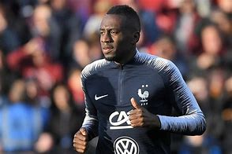
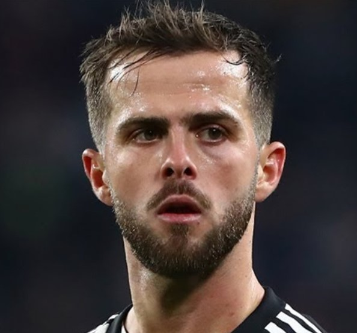
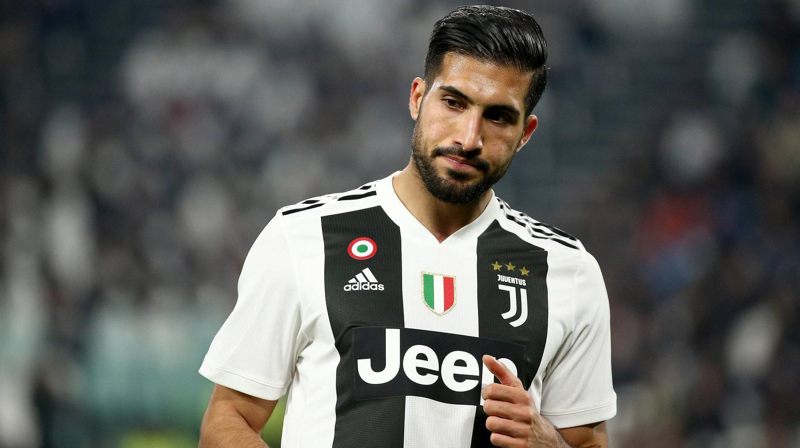

Blaise Matuidi (rojen 9. aprila 1987) je francoski poklicni nogometaš, ki je nazadnje igral kot vezist za klub Major League Soccer Inter Miami. Matuidi je svojo nogometno kariero začel z igranjem za amaterske klube v regiji Île-de-France, kot sta US Fontenay-sous-Bois in CO Vincennois. Leta 1999 je bil izbran za obisk prestižne akademije Clairefontaine. Po odhodu iz Clairefontainea se je Matuidi pridružil polprofesionalnemu klubu Créteil in se tri leta razvijal v klubski mladinski akademiji. Leta 2004 je podpisal pogodbo s profesionalnim klubom Troyes in poklicno debitiral v sezoni 2004–05. Po treh sezonah pri Troyesu se je Matuidi pridružil Saint-Étiennu. Pri Saint-Étiennu je prvič igral evropski nogomet po sodelovanju v izdaji pokala UEFA 2008–09. V sezoni 2009–10 je bil imenovan za prvega kapetana pod vodstvom trenerja Alaina Perrina. Julija 2011 je Matuidi po štirih sezonah pri Saint-Étiennu prestopil v Paris Saint-Germain s triletno pogodbo. V klubu je osvojil 16 domačih odličij, vključno s štirimi zaporednimi naslovi Ligue 1. Leta 2017 se je pridružil italijanskemu Juventusu in v svoji prvi sezoni osvojil domači dvojni naslov, v naslednjih dveh sezonah pa sta sledila še dva zaporedna naslova prvaka in 2018 Supercoppa Italiana. Poleti 2020 se je pridružil klubu MLS Inter Miami. Matuidi je nekdanji francoski mladinski reprezentant, ki je svojo državo zastopal na ravni do 19 in 21 let. Avgusta 2010 je bil Matuidi prvič vpoklican v seniorsko ekipo pod vodstvom novega trenerja Laurenta Blanca. Za mednarodno prvenstvo je debitiral septembra 2010 na kvalifikacijski tekmi za UEFA Euro 2012 proti Bosni in Hercegovini in je od takrat zastopal svojo državo na dveh UEFA evropskih prvenstvih v nogometu in dveh FIFA svetovnih prvenstvih, osvojil medaljo za podprvake na Euru 2016 in zmagovalno medaljo medaljo na svetovnem prvenstvu v nogometu 2018.
Miralem Pjanić (rojen 2. aprila 1990) je bosanski profesionalni nogometaš, ki igra kot vezist za La Liga klub Barcelono in reprezentanco Bosne in Hercegovine. Pjanić je svojo profesionalno kariero začel pri Metzu, kjer je bil tam eno sezono. Leta 2008 je podpisal za Lyon, nato pa leta 2011 po treh sezonah v Lyonu podpisal za Romo. V času, ko je bil v Rimu, je Pjanić postal priznan kot eden najboljših vezistov v Serie A. Leta 2016 se je Pjanić pridružil Juventusu in od takrat velja za nepogrešljivega igralca ekipe, saj je osvojil štiri naslove Serie A, dva Coppa Italias, in imenovanje za ekipo leta Serie A za sezone 2015–16, 2016–17, 2017–18 in 2018–19.[4][5] Uvrščen je bil tudi v najboljšo ekipo sezone UEFA Lige prvakov 2016–17 zaradi svoje vloge pri Juventusovem nastopu v finalu.[6] Pjanić se je Barceloni pridružil septembra 2020. Nekdanji luksemburški mladinski reprezentant Pjanić je leta 2008 debitiral za člansko reprezentanco Bosne in Hercegovine, od takrat je zbral več kot sto nastopov in dosegel osemnajst golov. Narod je zastopal na njihovem prvem velikem turnirju, Svetovnem prvenstvu v nogometu 2014. Leta 2015 je bil Pjanić na Guardianovi lestvici "100 najboljših nogometašev na svetu" uvrščen na 55. mesto.[7] Leta 2019 je bil na istem seznamu uvrščen na 50. mesto
Emre Can (turška izgovorjava: [ˈemɾe ˈdʒan]; [4] rojen 12. januarja 1994) je nemški profesionalni nogometaš, ki igra kot osrednji vezist za klub Bundesliga Borussia Dortmund in nemško reprezentanco. Can je vsestranski igralec, ki lahko igra tudi kot defenzivni vezist, osrednji branilec in bočni branilec. Svojo seniorsko kariero je začel pri Bayernu Münchnu, kjer je večinoma igral v klubski rezervi, preden je leta 2013 prestopil v Bayer Leverkusen. Sezono pozneje je z njim za 9,75 milijona funtov podpisal pogodbo Liverpool, kjer je zbral več kot 150 nastopov na vseh nivojih tekmovanja in se leta 2018 pridružil Juventusu. Leta 2020 je bil posojen Borussii Dortmund; nekaj tednov pozneje je prestopil k drugi ekipi pod stalnim dogovorom. Lahko zastopa Nemčijo od ravni U15 do najvišje lige U21 in nastopi na evropskem prvenstvu U21 2015. Septembra 2015 je debitiral za seniorje in bil izbran za evropsko prvenstvo 2016. Naslednje leto je bil z Nemčijo, ko je zmagala na Pokalu konfederacij FIFA 2017 v Rusiji, s čimer je dosegel svoj prvi članski mednarodni gol.
